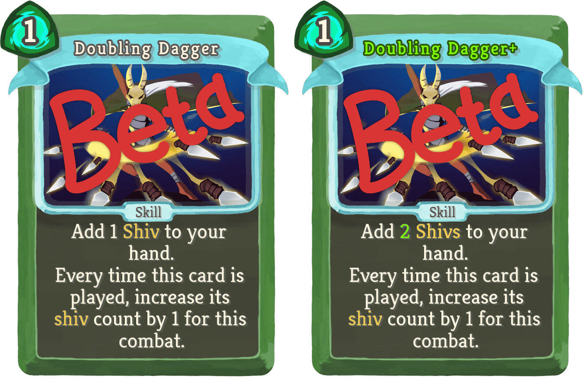
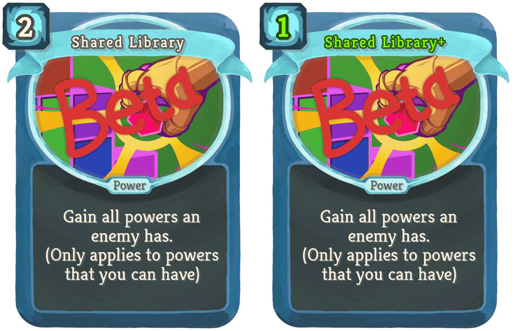
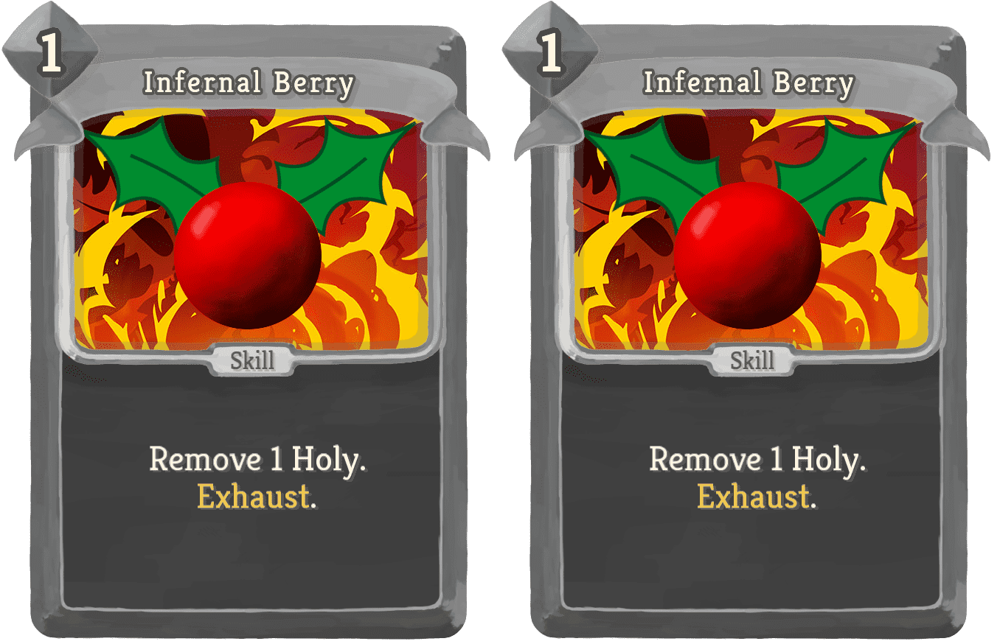
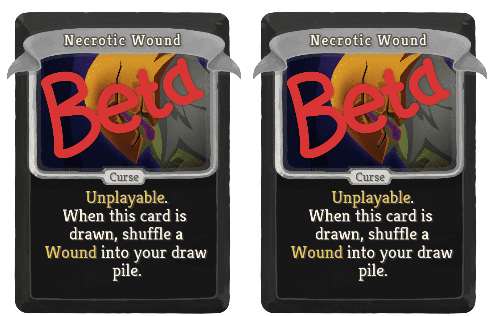
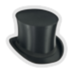
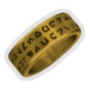
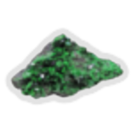
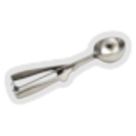
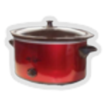
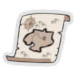

| Name | Image | Rarity | Type | Cost | Description |
|---|
| Charge |  | Uncommon | Attack | 1 | Deal 8 damage. Deals an additional 3 (4) damage for each turn of combat. |
| Explosive Barrier |  | Uncommon | Skill | 2 | Gain 12 (15) Block. If your Block is broken this turn, deal 18 (22) damage to the attacker. |
| Hit Where it Hurts |  | Rare | Attack | 2 | Deal 12 damage. Damage is multiplied by 125% (150%) for each Vulnerable. |
| Purge |  | Rare | Skill | 1 (0) | Lose 5 HP. Exhaust a card in your hand and permanently remove it from your deck. Exhaust. |
| Doubling Dagger |  | Uncommon | Skill | 1 | Add 1 (2) Shiv(s) to your hand. Every time this card is played, increase its shiv count by 1 for this combat. |
| Poison Weapons |  | Uncommon | Skill | 1 (0) | All unblocked attack damage is converted to Poison this turn. Exhaust. |
| Rain |  | Uncommon | Skill | 1 | Channel 1 Water. Exhaust. (not Exhaust.) |
| Shared Library |  | Uncommon | Power | 2 (1) | Gain all powers an enemy has. (Only applies to powers that you can have) |
| Defend |  | Special | Skill | 1 | Ethereal. Gain 5 (8) Block. |
| Infernal Berry |  | Special | Skill | 1 | Remove 1 Holy. Exhaust. |
| Infernal Berry | | Special | Skill | 1 | Remove 1 Holy. Exhaust. |
| Infernal Berry | | Special | Skill | 1 | Remove 1 Holy. Exhaust. |
| Infernal Berry | | Special | Skill | 1 | Remove 1 Holy. Exhaust. |
| Infernal Berry | | Special | Skill | 1 | Remove 1 Holy. Exhaust. |
| Infernal Berry | | Special | Skill | 1 | Remove 1 Holy. Exhaust. |
| Infernal Berry | | Special | Skill | 1 | Remove 1 Holy. Exhaust. |
| Infernal Berry | | Special | Skill | 1 | Remove 1 Holy. Exhaust. |
| Infernal Berry | | Special | Skill | 1 | Remove 1 Holy. Exhaust. |
| Infernal Berry | | Special | Skill | 1 | Remove 1 Holy. Exhaust. |
| SpireCo Stock |  | Special | Skill | 1 | Gain 10 (14) Gold. Exhaust. Value may change over time. |
| Strike |  | Special | Attack | 1 | Ethereal. Deal 6 (9) damage. |
| Pyramid Rune |  | Common | Status | 1 | Retain. Exhaust. |
| Pyramid Rune | | Common | Status | 1 | Retain. Exhaust. |
| Pyramid Rune | | Common | Status | 1 | Retain. Exhaust. |
| Pyramid Rune | | Common | Status | 1 | Retain. Exhaust. |
| Pyramid Rune | | Common | Status | 1 | Retain. Exhaust. |
| Pyramid Rune | | Common | Status | 1 | Retain. Exhaust. |
| Pyramid Rune | | Common | Status | 1 | Retain. Exhaust. |
| Pyramid Rune | | Common | Status | 1 | Retain. Exhaust. |
| Pyramid Rune | | Common | Status | 1 | Retain. Exhaust. |
| Pyramid Rune | | Common | Status | 1 | Retain. Exhaust. |
| Treasure |  | Common | Status | 1 | Gain 2 (3) Gold. Exhaust. |
| Banana |  | Uncommon | Skill | 0 | Gain 1 (2) permanent Max HP. Exhaust. |
| Blindness |  | Curse | Curse | | Unplayable. At the end of your turn, you become unable to see enemy intents for this combat. |
| Necrotic Wound |  | Curse | Curse | | Unplayable. When this card is drawn, shuffle a Wound into your draw pile. |
| Name | Image | Tier | Pool | Description | Flavor |
|---|
| Top Hat |  | Common | | If your hand is full when drawing a card, draw an extra card next turn instead. | This stylish hat can also be used to store rabbits and excess cards. |
| Bottled Yo-Yo |  | Uncommon | | Upon pickup, choose a card. When it is put into your discard pile, shuffle it into your draw pile. | Yo, yo. |
| Decoder Ring |  | Uncommon | | When you play 3Attacks, then 2Skills, then 2Attacks, then 1Skill, deal 30 damage to all enemies. | Up, up, down, down, left, right, left, right, B, A. |
| Deflated Dodgeball |  | Uncommon | | You have a 10% chance to dodge attacks. | |
| Dentures | | Uncommon | | Whenever you play a Power, add a copy of it to your discard pile 50% of the time. | You don't know what elderly monster these belonged to. |
| Flyswatter |  | Uncommon | | At future Card Reward screens you will no longer be offered cards that you have previously skipped. | There are insects all over inside the spire. This swatter only works for the small ones. |
| Boomerang | | Rare | | Place the first Attack card you play each turn on top of your draw pile. | Always comes back to you. |
| Gift Box |  | Rare | | Upon pickup, choose and add 1 rare card to your deck. | It could be anything. |
| Glowing Rock |  | Rare | | At the end of your turn you may Exhaust a card from your hand. | It is slightly warm to the touch. |
| Ice Cream Scoop |  | Rare | Blue | You can rearrange your Orbs by dragging them. | Makes nice spheres. |
| Infinite Journal |  | Rare | | Cards can be upgraded any number of times. | It just goes on forever. |
| Royal Goblet |  | Boss | | Gain [E] at the start of each turn. Draw 1 fewer card each turn. | Fit to serve a king. Or maybe made from cheap plastic. |
| Runic Octahedron | | Boss | | Draw 1 fewer card each turn. Every time you play 2 cards in a single turn, draw a card. | The runes are indecipherable. |
| Severed Torchhead |  | Boss | | Gain [E] at the start of each turn. Whenever you play an Attack, lose 1Dexterity for the turn. Whenever you play a Skill, lose 1Strength for the turn. | The flame has died, so the owner will not miss it. |
| Slow Cooker |  | Boss | | Gain [E] at the start of each turn. On the first turn of combat lose 2 Energy instead. | Allows you to prepare a hearty spire-stew. Not for the impatient. |
| Special Sausage |  | Boss | | Upon pickup, choose to start each combat with 2Strength,2Dexterity, or 2Focus. | Found lying around the spire. Should be safe to eat. |
| Treasure Map |  | Shop | | The map now shows what relics can be found in treasure and elite rooms. | X marks the spot. |
{kind=link}
{kind=link}
{kind=link}


{kind=link}